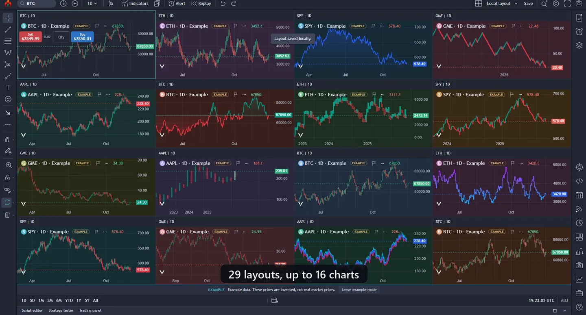
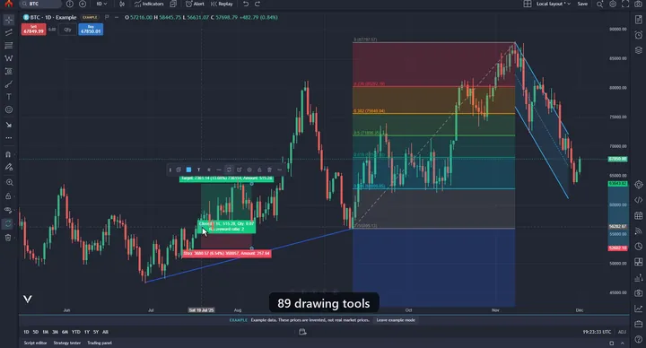
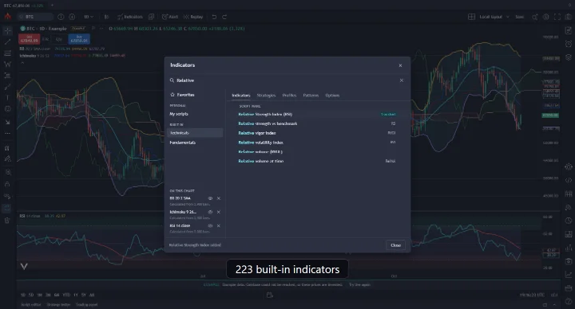
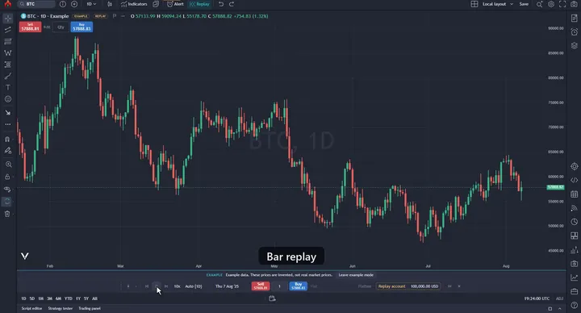
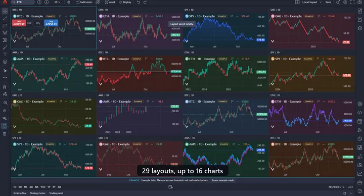

Free, source-available charting.
Bring your own data.
OpenCandle is a desktop charting app for Windows. Charts, indicators, drawings, replay, scripting, strategy testing and paper trading, all on your own computer.
- No account
- No telemetry
- Local first
- Source available

53 seconds of the real app
Recorded in OpenCandle 0.8.3 on live market data: US stocks from Alpaca, crypto from Coinbase and company filings from SEC. No sound.
What is in 0.8.3
Below is what the download includes today. Counts come straight from the source.
22 chart types
Candles, Heikin Ashi, Renko, Kagi, point and figure, line break, range bars, volume footprint, TPO, session volume profile and more.
223 built-in indicators
Including 6 volume profiles and 62 chart and candlestick patterns, each with its own settings per instance.
89 drawing tools
Trend lines, channels, pitchforks, Fibonacci and Gann tools, patterns, shapes and text. Object tree, templates, magnet snapping, undo and redo.
29 layouts, up to 16 charts
Layout tabs, a layout library and six sync switches: symbol, interval, crosshair, time, date range and drawings.
Bar replay and alerts
Step and play through history; calculations never see the hidden future bars. Alerts on price, drawings and indicators, with a manager and history.
Strategy tester, 23 strategies
Performance summary, report chart and saved reports. Paper trading with market, limit, stop and stop-limit orders and a DOM pane. Virtual money only.
CandleScript
OpenCandle's own scripting language for indicators, strategies and alert conditions, in a restricted sandbox, with an editor, completion and logs. A Pine Script importer converts common Pine v5/v6 indicators and simple strategies into CandleScript for you to review.
Explain and export
Every indicator and drawing tool has an About tab covering what it is for, how it is calculated, its defaults and its sources. One menu item exports every indicator on the current chart to an Excel workbook.
Fundamentals on the chart, 24 metrics
P/E, P/E bands, revenue, free cash flow, margins, market cap and more from SEC filings, in panes under the price. Each value appears only from the day its filing was public, and the Data window shows the filing it came from.
And more
Watchlists, screener, SEC filings and earnings badges, FRED yield curves and macro views, heatmap, calendar and news imports, portfolio view, two built-in themes.
Screenshots
Click any image for the full size.








Screenshots use the built-in example data. Those prices are invented, not real market prices.
Bring your own data
OpenCandle does not sell or resell market data, and there is no OpenCandle server in the middle. The app talks straight to the sources you turn on, from your computer. Here is what each one needs.
Practice charts Built in
Choose Load example data to practise without any account. These prices are invented.
Crypto No key
BTC-USD, ETH-USD and SOL-USD from Coinbase public market data. On for a new install: a live BTC-USD chart opens first.
US stocks and ETFs Your free key
Make a free Alpaca account, create an API key and paste it in. Free plan: live IEX prices for up to 30 symbols, plus history with splits and dividends.
Economic data No key
Type FRED: and a series id, for example FRED:DGS10. Each series downloads from the St. Louis Fed only when you open it.
Fundamentals and filings No key
Company fundamentals and SEC filings from the SEC's public EDGAR service. SEC asks readers to identify themselves, so you type your own name and email in the app; nothing is sent to SEC until you do.
Your own files Your data
Import CSV or JSON bars (time, open, high, low, close, volume), up to 20 MB and 100,000 rows. Good for futures, forex or anything else.
Your Alpaca key is encrypted with your Windows sign-in and never leaves your computer except to talk to Alpaca. Workspaces, drawings, scripts and settings are saved in your Windows profile folder. Provider terms apply to the data you connect.
Download and run
OpenCandle 0.8.3 is a portable ZIP for Windows 10 and 11 (64-bit). There is no installer and nothing to sign up for.
Steps
- Download the ZIP from the latest release.
- Right-click it and choose Extract All. Extract the whole ZIP; do not run it from inside the ZIP.
- Open the extracted folder and run OpenCandle.exe.
Optional: check the download. Each release lists the ZIP's SHA-256. In PowerShell:
Get-FileHash .\OpenCandle-*.zip -Algorithm SHA256
Windows will warn you. That is expected.
The build is not code-signed yet, so Microsoft Defender SmartScreen may show "Windows protected your PC" the first time you run it.
To continue, click More info, check the app name, then click Run anyway. Windows usually asks once for each new version.
If you would rather not, you can build it from source yourself. Code signing is on the list.
Feedback and contributing
- Bugs: open an issue with the steps, what you expected and what happened.
- Wrong numbers: open an issue with the indicator or strategy, its settings, the symbol and interval.
- Code and docs: see CONTRIBUTING.md.
- Ideas and questions: Discussions.
- Security problems: private reporting, not a public issue.
Windows only for now. Mac and Linux builds are not available yet.